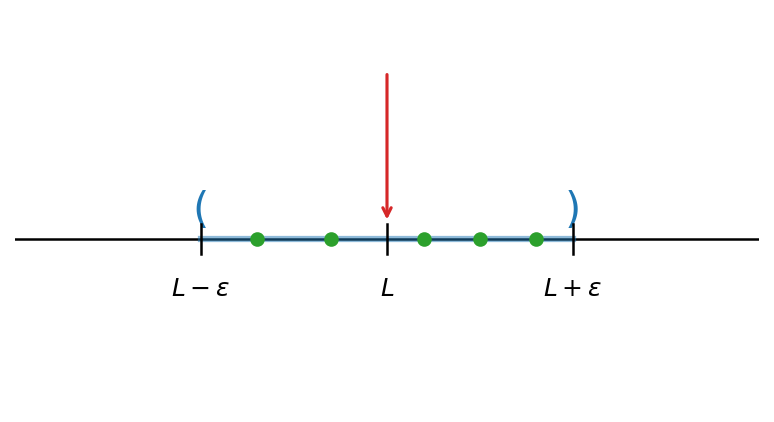
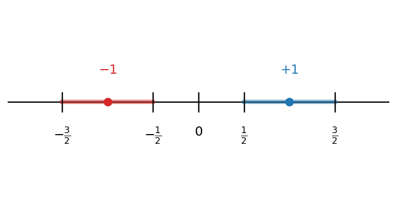
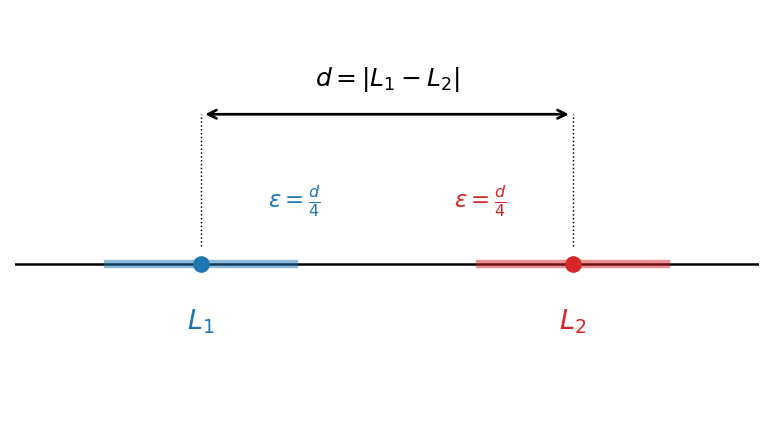
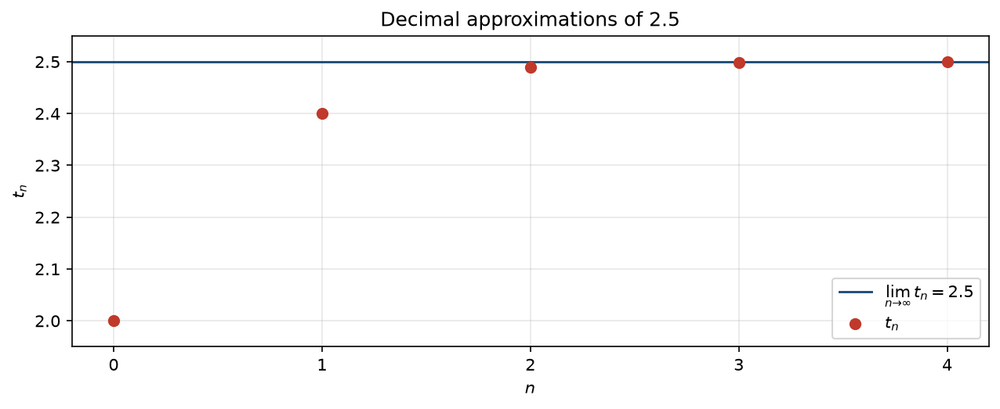

7 גבול של סדרה
7.1 הגדרה ודרכי תיאור
הגדרה 7.1.1.
סדרה (ממשית) היא אוסף אינסופי של מספרים ממשיים, שבו יש חשיבות לסדר וחזרות מותרות (ראו את הדיון על ההבדל בין סדרה לקבוצה בפרק המבוא): \[a_1, a_2, a_3, \dots, a_n, \dots\] \(a_n\) הוא האיבר שבמקום \(n\), ו-\(n\) הוא האינדקס הרץ על המספרים הטבעיים. את הסדרה כולה נסמן בקיצור \(\{a_n\}_{n=1}^{\infty}\).
הערה 7.1.2 (ההגדרה הפורמלית: סדרה כפונקציה).
פורמלית, סדרה ממשית \(\{a_n\}_{n=1}^{\infty}\) היא פונקציה \(a:\mathbb{N}\to\mathbb{R}\) — לכל מספר טבעי \(n\) מותאם ערך ממשי יחיד \(a_n = a(n)\). הצגה זו הופכת את ״הסדר״ ואת ״האינסופיות״ למדויקים. האינדקס רץ על המספרים הטבעיים \(\mathbb{N} = \{1, 2, 3, \dots\}\), ולכן סדרה מתחילה כברירת מחדל מ-\(a_1\); רק כאשר יצוין במפורש נתחיל את האינדקס במקום אחר (למשל \(a_0\)).
איך מתארים סדרה? עלינו לתאר במדויק איזה איבר נמצא במקום ה-\(n\), לכל \(n\in\mathbb{N}\). לכתוב את כל האיברים לפי הסדר — בלתי אפשרי, שכן יש אינסוף מהם. לכן נעזרים בכמה דרכים לתיאור סדרה; נציג שלוש דרכים נפוצות.
הדרך ה״נאיבית״
רושמים כמה מן האיברים הראשונים, מתוך הנחה ששאר האיברים ״ברורים מן ההקשר״. לדוגמה, \(1, 3, 5, 7, \dots\) מתארת (כך אנו מקווים) את סדרת המספרים האי-זוגיים בסדר עולה. הדרך פשוטה ונוחה להמחשה, אך בעייתית משתי סיבות:
- הסדרה אינה מוגדרת היטב. ייתכנו כמה המשכים הגיוניים באותה מידה. כיצד, למשל, יש להמשיך את \(2, 4, 8, \dots\)? אולי \(16\) (חזקות של \(2\)), ואולי \(14\) (בהפרשים ההולכים וגדלים \(2, 4, 6, \dots\)). אין דרך להכריע בין השתיים מן הרשימה בלבד.
- אין גישה ישירה לאיבר. גם כשהכוונה ברורה, קשה לעיתים לומר מהו האיבר במקום מסוים בלי לכתוב את כל קודמיו — למשל, מהו האיבר ה-\(100\)?
נוסחה סגורה
הדרך השנייה: ביטוי המחשב את \(a_n\) ישירות מתוך \(n\), בלי תלות באיברים הקודמים. יתרונה הגדול הוא הגישה הישירה — אפשר ״לקפוץ״ מיד לכל איבר שנרצה, גם ל-\(a_{100}\), בלי לחשב את קודמיו. כך, את סדרת המספרים האי-זוגיים נתאר בפשטות על ידי \(a_n = 2n - 1\).
דוגמה 7.1.3.
כמה סדרות המוגדרות בנוסחה סגורה:
- \(a_n = n\) נותנת \(1, 2, 3, 4, \dots\);
- \(a_n = (-1)^n\) נותנת \(-1, 1, -1, 1, \dots\) — סדרה מתחלפת;
- \(a_n = 2^n\) נותנת \(2, 4, 8, 16, \dots\) — חזקות של \(2\);
- הסדרה הקבועה \(a_n = 8\) נותנת \(8, 8, 8, \dots\).
רקורסיה
לא לכל סדרה קל — ולעיתים אף לא ידוע — למצוא נוסחה סגורה. דרך טבעית אחרת היא רקורסיה: מגדירים במפורש כמה מן האיברים הראשונים, ונותנים כלל המחשב כל איבר חדש מתוך קודמיו. (בקורס נסתפק בכללים התלויים במספר סופי של איברים קודמים.) לרקורסיה יש חיסרון — כדי להגיע ל-\(a_{100}\) יש לחשב תחילה את כל קודמיו — אך לעיתים היא הדרך הטבעית, ואף היחידה הפשוטה, לתאר סדרה. על מנת להתגבר על הבעיה של חישוב האיבר הכללי, מנסים להמיר את הנוסחה הרקורסיבית לנוסחה סגורה. באופן כללי, זו בעיה קשה ולא נתייחס למקרה הכללי בקורס. יחד עם זאת, לעיתים ניתן ל״נחש״ את הנוסחה ולהוכיח אותה בשיטות כמו אינדוקציה.
שתי הסדרות המוכרות ביותר מבית הספר — החשבונית וההנדסית — מוגדרות באופן טבעי ברקורסיה.
דוגמה 7.1.4.
סדרה חשבונית: מתחילים באיבר \(a_1\), ובכל צעד מוסיפים הפרש קבוע \(d\), כלומר \(a_{n+1} = a_n + d\). למשל, \(a_1 = 3\) ו-\(d = 2\) נותנות \(3, 5, 7, 9, \dots\). (יש לה גם נוסחה סגורה: \(a_n = a_1 + (n-1)\,d\).)
דוגמה 7.1.5.
סדרה הנדסית: מתחילים באיבר \(a_1\), ובכל צעד מכפילים במנה קבועה \(q\), כלומר \(a_{n+1} = q\,a_n\). למשל, \(a_1 = 1\) ו-\(q = 2\) נותנות \(1, 2, 4, 8, \dots\). (וגם לה נוסחה סגורה: \(a_n = a_1\,q^{\,n-1}\).)
דוגמה 7.1.6.
העצרת \(n!\). אין ״פעולה חשבונית״ יחידה שמשמעותה ״מכפלת כל המספרים מ-\(1\) עד \(n\)״; העצרת מוגדרת מלכתחילה ברקורסיה: \[,a_1 = 1 \qquad a_{n+1} = (n+1)\,a_n\] ומתקבלת \(1, 2, 6, 24, 120, \dots\), כלומר \(a_n = n!\).
דוגמה 7.1.7.
סדרת פיבונאצ׳י, שבה כל איבר הוא סכום שני קודמיו: \[,a_1 = a_2 = 1 \qquad a_{n+1} = a_n + a_{n-1}\] ומתקבלת \(1, 1, 2, 3, 5, 8, 13, 21, \dots\). זוהי אולי הסדרה הרקורסיבית המפורסמת ביותר, והיא צצה במקומות מפתיעים במתמטיקה ובטבע.
סדרת פיבונאצ׳י הופיעה לראשונה בספרו של לאונרדו מפיזה (המכונה ״פיבונאצ׳י״) בשנת \(1202\), כפתרון לחידה על התרבות ארנבים: מתחילים בזוג ארנבים אחד; כל זוג בוגר מוליד זוג חדש מדי חודש, וזוג טרי מבשיל תוך חודש. מספר זוגות הארנבים בחודש ה-\(n\) הוא בדיוק \(a_n\).
לסדרה יש גם נוסחה סגורה (״נוסחת בינה״), המערבת את יחס הזהב \(\varphi = \frac{1+\sqrt{5}}{2}\). אלא שהנוסחה הזו אינה ״מסבירה״ את הסדרה: היא נשענת על מספרים אי-רציונליים, למרות שכל איברי הסדרה שלמים, ורחוקה מלהיות מובנת מאליה. דווקא ההגדרה הרקורסיבית חושפת את התכונה שבזכותה הסדרה חשובה — שכל איבר הוא סכום קודמיו.
זו תופעה כללית: סדרות רבות שצצות בפועל — במדעי המחשב, ביולוגיה, פיסיקה, כלכלה ובתחומים רבים נוספים — מוגדרות באופן טבעי ברקורסיה, מפני שהן מתארות תהליכים שבהם המצב הבא תלוי במצב הנוכחי (או בכמה מצבים קודמים) ולאו דווקא במספר הצעד בתהליך. למשל, בחידת הארנבים מספר הזוגות בחודש הנוכחי הוא סכום הזוגות שכבר היו בחודש הקודם והזוגות החדשים שנולדו; ומספר הנולדים שווה למספר הזוגות הבוגרים — אלה שהיו כבר לפני חודשיים. כך כל איבר נקבע משני קודמיו, ללא תלות ישירה במספר החודש.
הכלל הרקורסיבי גמיש: הוא יכול להישען על איברים רחוקים מן האחרון, ואף להשתנות לפי צורת האינדקס. נגדיר, למשל, סדרה שכל איבר בה נשען על האיבר שבמקום \(\left\lfloor n/2 \right\rfloor\), בהתאם לזוגיות של \(n\): \[a_n = \begin{cases} a_{n/2} & \text{יגוז}\ n \\ a_{(n-1)/2} + 1 & \text{יגוז-יא}\ n \end{cases}\] (עם \(a_1 = 1\)). מתקבלת הסדרה \(1, 1, 2, 1, 2, 2, 3, 1, \dots\), ומסתבר ש-\(a_n\) הוא בדיוק מספר הספרות \(1\) בייצוג הבינארי של \(n\).
תרגילים
בתרגילים המקוונים אפשר להקליד תשובה וללחוץ ״בדיקה״; בגרסה המודפסת הפתרונות מופיעים בהמשך. לשברים השתמשו ב-/ (למשל 1/3), ולחזקות ב-^ (למשל 2^5).
תרגיל 1. רשמו את חמשת האיברים הראשונים \(a_1,\dots,a_5\) של כל סדרה (מופרדים בפסיקים):
תרגיל 2. נתונים איבריה הראשונים של כל סדרה; מצאו נוסחה סגורה \(a_n\) כפונקציה של \(n\):
תרגיל 3. רשמו את חמשת האיברים הראשונים של כל אחת מהסדרות המוגדרות ברקורסיה:
7.2 גבול של סדרה
מהו הערך שסדרה מתקרבת אליו? הרעיון: איברי הסדרה נעשים קרובים לערך \(L\) כרצוננו — קרובים ככל שנדרוש — החל ממקום מסוים והלאה.
הגדרה 7.2.1.
תהי \(\{a_n\}_{n=1}^{\infty}\) סדרה. נאמר שהסדרה מתכנסת, או שיש לה גבול, אם קיים \(L\in\mathbb{R}\) כך שלכל \(\varepsilon>0\) קיים \(N\in\mathbb{N}\) כך שלכל \(n > N\) מתקיים \[|a_n - L| < \varepsilon\] במקרה זה נאמר שהסדרה שואפת (או מתכנסת) ל-\(L\), ונסמן \(\lim\limits_{n\to\infty}a_n=L\) או \(a_n \to L\). אם אין לסדרה גבול, נאמר שהיא מתבדרת.
שימו לב למספר פרטים בהגדרה:
- התנאי מתקיים לכל מספר חיובי \(\varepsilon>0\).
- האינדקס \(N\) תלוי ב-\(\varepsilon\), אך תמיד קיים — ככל שנדרוש דיוק רב יותר (כלומר \(\varepsilon\) קטן יותר), ייתכן שנצטרך להתקדם רחוק יותר בסדרה.
- לכל \(\varepsilon>0\), מספר האיברים המקיימים \(|a_n - L| \geq \varepsilon\) הוא סופי.
- ההתכנסות אינה תלויה באיברים הראשונים של הסדרה — ״חשוב מה שקורה בסוף״.
תרשים: ציר מספרים עם הקטע \((L-\varepsilon,\,L+\varepsilon)\) סביב הגבול \(L\) — כל איברי הסדרה נמצאים בקטע החל ממקום מסוים

7.3 דוגמאות
נציג שלוש דוגמאות בסיסיות: סדרה קבועה (התכנסות מיידית), סדרה מתחלפת (התבדרות), וסדרה שמתכנסת ״באמת״ אך אינה קבועה.
דוגמה 7.3.1.
הסדרה הקבועה \(a_n = 1\) (כלומר \(1, 1, 1, \dots\)) מתכנסת, וגבולה — באופן לא מפתיע — הוא \(1\): לכל \(\varepsilon>0\) ולכל \(n\) מתקיים \(|a_n - 1| = |1-1| = 0 < \varepsilon\), כך שאותו \(N\) מתאים לכל \(\varepsilon\). זהו מקרה חריג: כאשר הסדרה אינה קבועה, בדרך כלל \(N\) תלוי ב-\(\varepsilon\).
דוגמה 7.3.2.
הסדרה \(a_n = (-1)^n\), כלומר \(-1, 1, -1, 1, \dots\), מתבדרת. נניח בשלילה שיש לה גבול \(L\). אז לכל \(\varepsilon>0\) קיים \(N\) כך שלכל \(n>N\) מתקיים \(|a_n - L| < \varepsilon\). ניקח \(\varepsilon = 1\). לכל \(n>N\) זוגי מתקיים \(a_n = 1\), ולכן \(|1 - L| < 1\); לכל \(n>N\) אי-זוגי מתקיים \(a_n = -1\), ולכן \(|L - (-1)| < 1\). לפי אי-שוויון המשולש, \[2 = |1 - (-1)| \le |1 - L| + |L - (-1)| < 1 + 1 = 2,\] כלומר \(2 < 2\) — סתירה. לכן הסדרה מתבדרת.
תרשים: הסדרה \(a_n = (-1)^n\) — איבריה קופצים בין שני קווים, ולכן אינם מתקרבים לקו אחד

דוגמה 7.3.3.
הסדרה \(a_n = 1 + \dfrac{\sin(n)}{n}\) (עבור \(n \ge 1\)) מתכנסת, וגבולה \(1\). יהי \(\varepsilon>0\). קיים \(N\) כך ש-\(N \ge \dfrac{1}{\varepsilon}\), ולכן לכל \(n>N\) מתקיים \(\dfrac{1}{n} < \dfrac{1}{N} \le \varepsilon\). לכן \[|a_n - 1| = \left|\frac{\sin(n)}{n}\right| \le \frac{1}{n} < \varepsilon,\] כנדרש.
תרשים: התכנסות הסדרה \(a_n = 1 + \frac{\sin(n)}{n}\) אל \(1\) — הנקודות נעשות צפופות סביב קו הגבול

נשים לב: הגדרת ההתכנסות בודקת רק את קיום הגבול, לא את מהירות ההתקרבות אליו. שתי סדרות יכולות להתכנס לאותו גבול בקצבים שונים מאוד.
דוגמאות נוספות
דוגמה 7.3.4.
עבור \(a_n = \dfrac{1}{n}\) מתקיים \(\lim\limits_{n\to\infty} a_n = 0\). יהי \(\varepsilon>0\); נבחר \(N = \left\lfloor \dfrac{1}{\varepsilon}\right\rfloor + 1\). אז לכל \(n>N\) מתקיים \(n > \dfrac{1}{\varepsilon}\), ולכן \(\left|\dfrac{1}{n} - 0\right| = \dfrac{1}{n} < \varepsilon\).
דוגמה 7.3.5.
עבור \(a_n = \dfrac{3n-4}{n+2}\) מתקיים \(\lim\limits_{n\to\infty} a_n = 3\). נפשט: \[\left|\frac{3n-4}{n+2} - 3\right| = \left|\frac{3n-4-3(n+2)}{n+2}\right| = \frac{10}{n+2} < \frac{10}{n}.\] יהי \(\varepsilon>0\); נבחר \(N = \left\lfloor \dfrac{10}{\varepsilon}\right\rfloor + 1\). אז לכל \(n>N\) מתקיים \(\dfrac{10}{n} < \varepsilon\), ולכן \(\left|a_n - 3\right| < \varepsilon\).
7.4 פיתוח עשרוני כסדרה (העשרה)
בפרק המבוא ראינו את סדרת הקירובים העשרוניים של \(\sqrt{2}\). כעת, משהוגדרה ההתכנסות, נטפל בפיתוח העשרוני במדויק. כדוגמה, נענה על השאלה: האם \(0.999\dots = 1\)? אחרי שראינו הגדרה של המושג גבול, התשובה היא ״כן״ — שני הסימונים מתארים את אותו מספר. הסיבה: \(0.999\dots\) הוא קיצור לסדרת הקירובים \(0.9,\ 0.99,\ 0.999,\ \dots\), המתכנסת ל-\(1\).
הגדרה 7.4.1.
יהי \(a>0\) ממשי. נגדיר ברקורסיה סדרת ספרות \(\{a_n\}_{n=1}^\infty\) (עם \(a_n \in \{0,1,\dots,9\}\), ו-\(a_0\) שלם כלשהו): \(a_0\) הוא המספר השלם הגדול ביותר הקטן ממש מ-\(a\), ובהינתן \(a_0,\dots,a_n\), \[a_{n+1} = \max\left\{k \in \{0,\dots,9\} \;\middle|\; a_0.a_1\dots a_n + \frac{k}{10^{n+1}} < a\right\}.\] הביטוי \(a_0.a_1a_2\dots\) נקרא הפיתוח העשרוני של \(a\) (עבור \(a<0\) לוקחים את הפיתוח של \(-a\) עם סימן מינוס, ועבור \(a=0\) את הסדרה הקבועה \(0\)). נסמן \(t_n = a_0.a_1\dots a_n\), ונקרא ל-\(\{t_n\}\) סדרת הקירובים העשרוניים של \(a\).
טענה 7.4.2.
יהי \(a\in\mathbb{R}\), ותהי \(\{t_n\}\) סדרת הקירובים העשרוניים שלו. אז \(\lim\limits_{n\to\infty} t_n = a\); במילים אחרות, \(a = a_0.a_1a_2\dots\).
הוכחה.
נניח \(a>0\) (המקרים \(a<0\) ו-\(a=0\) דומים). לפי בניית הספרות, לכל \(n\) מתקיים \(t_n < a \le t_n + \frac{1}{10^n}\), ולכן \(|t_n - a| \le \frac{1}{10^n}\). יהי \(\varepsilon>0\). לפי תכונת ארכימדס (לכל ממשי חיובי קיים מספר טבעי הגדול ממנו) קיים \(N\) כך ש-\(10^N > \frac{1}{\varepsilon}\), כלומר \(\frac{1}{10^N} < \varepsilon\). לכן לכל \(n>N\) מתקיים \(|t_n - a| \le \frac{1}{10^n} \le \frac{1}{10^N} < \varepsilon\), כנדרש.
דוגמה 7.4.3.
הפיתוח העשרוני של \(2.5\) הוא \(2.4999\dots\), וסדרת הקירובים שלו היא \(2,\ 2.4,\ 2.49,\ 2.499,\ \dots\) — המתכנסת ל-\(2.5\).
תרשים: התכנסות הקירובים העשרוניים הסופיים של \(2.5\)

כעת נשוב לשאלה שפתחנו בה. לפי הגדרת הפיתוח, הפיתוח של \(1\) הוא \(0.999\dots\): המספר השלם הגדול ביותר הקטן ממש מ-\(1\) הוא \(a_0 = 0\), ובכל שלב הספרה הגדולה ביותר ששומרת על הקירוב קטן ממש מ-\(1\) היא \(9\). סדרת הקירובים \(0,\ 0.9,\ 0.99,\ \dots\) מתכנסת ל-\(1\), ולכן \[0.999\dots = \lim_{n\to\infty} t_n = 1.\] שני הסימונים \(0.999\dots\) ו-\(1.000\dots\) מתארים אפוא את אותו מספר ממשי.